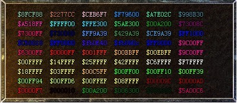

功能：
<COLOR=clAqua 你好！>\<关闭/@exit>
<COLOR=$123456 你好！> //$表示16进制
格式：
例：<COLOR=clAqua
你好！>\<关闭/@exit>
clBlack, clMaroon, clGreen, clOlive, clNavy,
clPurple, clTeal, clGray,
clSilver, clRed, clLime, clYellow, clBlue,
clFuchsia, clAqua, clLtGray,
clDkGray, clWhite, clMoneyGreen, clSkyBlue,
clCream, clMedGray
